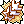

Ataque Aéreo

Caçador · ativa e automática (com o falcão)
O falcão do Caçador ataca sozinho com mais frequência, sai sempre no nível que você aprendeu e acerta cada monstro da área com o dano inteiro.
Como era → como ficou
| Como era | Como ficou | |
|---|---|---|
| Chance do automático | ~0,33% por ponto de SOR | 0,5% por ponto de SOR |
| Nível do automático | limitado pelo nível de classe ((nível de classe + 9) / 10) | o nível que você aprendeu |
| Dano do automático na área (3×3) | dividido entre os monstros | cheio em cada monstro |
| Ataque Aéreo usado à mão | igual | igual |
Níveis e números
- Chance do automático a cada ataque normal com arco e o falcão: SOR × 0,5%.
- SOR 30: 15%;
- SOR 60: 30%;
- SOR 90: 45%.
- Nível: o automático sai no nível aprendido (nv 5 = 5 golpes), desde o primeiro nível de classe. Antes, um Caçador de nível de classe 20 só soltava o nv 2.
- Área: o automático acerta os monstros do 3×3 em volta do alvo. Antes, o dano se dividia entre eles; agora cada um toma o golpe inteiro. Com 3 monstros juntos, é o triplo do dano de antes.
- O dano do falcão continua ignorando a DEF e a esquiva do monstro.
Como aprender
Pela árvore do Caçador, como antes: Adestrar Falcão e Garras de Aço (que aumenta o dano).
Dicas
- A SOR é o atributo do falcão: com SOR 90, quase metade dos seus ataques soltam o falcão.
- Mais velocidade de ataque também dá mais falcão, porque cada ataque normal é uma chance.
- Puxe os monstros em grupo: o falcão acerta todos do 3×3 com o dano inteiro.
Habilidade original no bROwiki: Ataque Aéreo · Veja também: Ataque da Fera, Inimigo das Feras